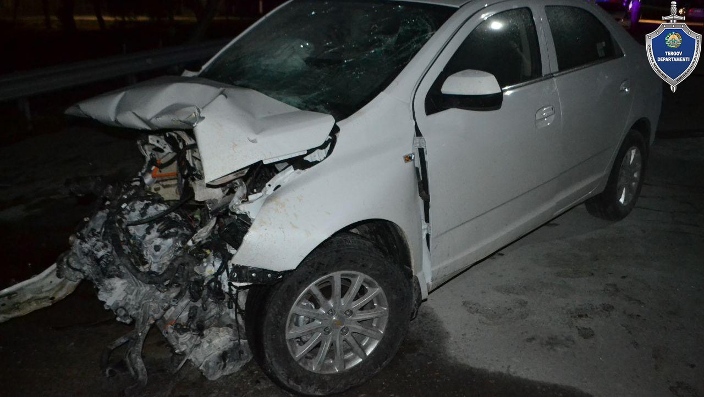
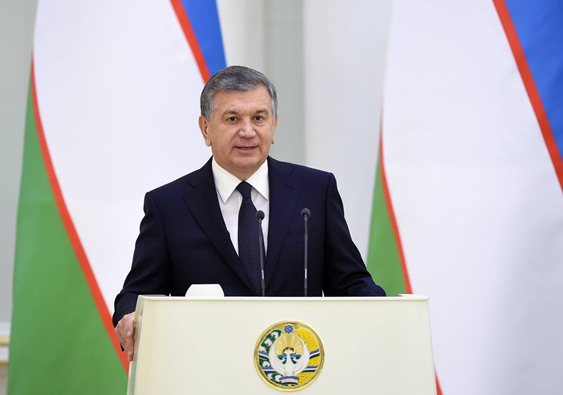
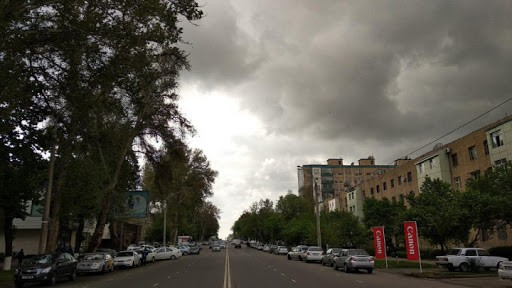

Yangi Namangan tumanida 380 mln so'm kredit mablag'ini o'zlashtirgan shaxslar aniqlandi
Bosh prokuratura huzuridagi Departamentning Yangi Namangan tuman bo'limi tomonidan o'tkazilgan tergovga qadar tekshiruvda, “D.A.” MChJ rahbari A.U. “Yoshlar kelajagimiz” jamg'armasi viloyat filiali bosh mutaxassisi A.A. bilan o'zaro.

Namanganda Cobalt va traktor to'qnashdi. Qurbonlar bor
Joriy yilning 1 oktyabrь kuni Namangan viloyatining Pop tumanida yengil avtomobilь va traktor to'qnashuvida ikki kishi halok bo'ldi. Bu haqda Namangan viloyati IIB YHXB xabar berdi.

Shavkat Mirziyoev qisqa muddatli mehnat ta'tiliga chiqdi
Prezident Shavkat Mirziyoev 4 yanvardan qisqa muddatli mehnat ta'tiliga chiqdi, deya xabar bermoqda davlat rahbarining matbuot xizmati.
